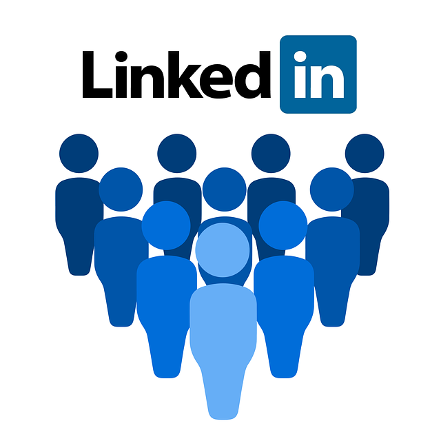
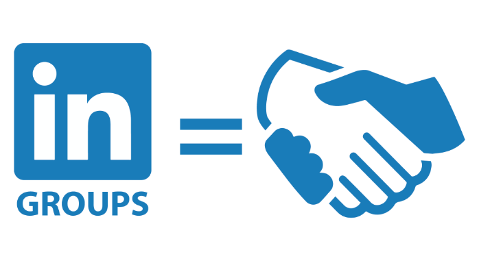

Grupe
LinkedIn također podržava formiranje grupa interesa i od 2012. broji više od milijun i dvjesto tisuća grupa. Većina većih grupa orijentirana je na zapošljavanje, ali ima i velik broj grupa koji se okrenuo prema problemima vezanima za poslovne karijere. Svaka grupa ima određen spektar tema o kojima se može raspravljati. Grupe također održavaju svoje korisnike informiranima o promjenama u grupi i o temama koje bi ih mogle zanimati preko e-maila. Administratori imaju opciju odlučiti hoće li grupa biti zatvorenog tipa tj. samo za članove , ili otvorenog gdje svi ljudi mogu vidjeti teme koje se obrađuju unutar pojedine grupe. No kako bi mogli komentirati na postove koji su im privukli pažnju, moraju se prvo priključiti samoj grupi.
 